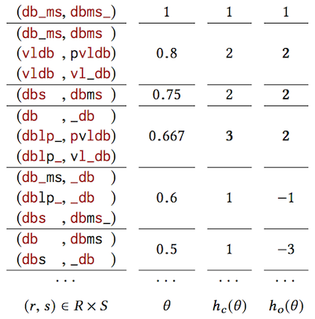
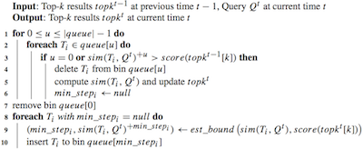
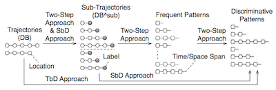
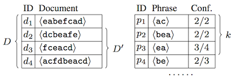
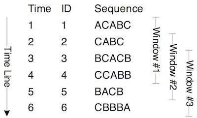
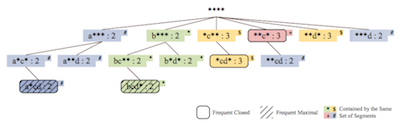
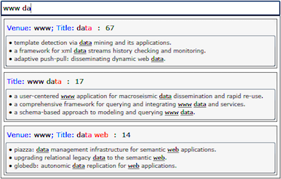
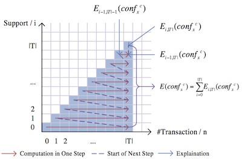
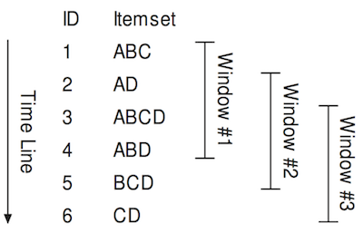
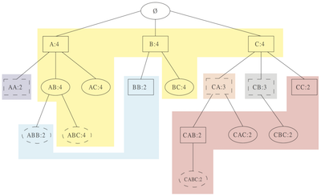

Chuancong Gao PhD Candidate

|
Hello. I am a PhD candidate in computering science at Simon Fraser University. My research focus on Database, Data Integration, Data Cleaning, and Data Mining. I am expected to graduate in September, 2017.
Currently I am leading the development of multiple large scale data analysis/visualization projects. [ Google Scholar] [ DBLP] [ Github] [ Linkedin] [ SlideShare] [ Resume] |
| 2015 -- Now |

|
NCAA Game Report Generator
( Tech Lead)
Automatically collect and parse the statistic and play-by-play data after each NCAA men/women's basketball game, and generate detailed analysis/visualization report for the team coach. |
| 2014 -- Now |

|
GeNA Miner
( Tech Lead)
A large scale data collecting/analysis/visualization system for different data sources, including PubMed, Twitter, and any user uploaded data. |
| 2017 |

|
Chuancong Gao.
( Ongoing PhD Thesis)
Data Integration on Complex Data. Simon Fraser University, 2017. |
|
Chuancong Gao.
( Preparing for Submission)
Evolving Partial Concept Hierarchy over Ad-hoc Sliding Query. |
||
|
Chuancong Gao, Jian Pei, Jiannan Wang.
( Preparing for Submission)
Parsing Text to Relational Table via Hidden Schema Discovery. |
||
|
Chuancong Gao, Jian Pei, Jiannan Wang, Yi Chang.
( Under Review)
Schema-less Join for Result Set Preferences. |
||
|  |
Chuancong Gao, Jiannan Wang, Jian Pei, Rui Li, Yi Chang.
( To Appear)
Preference-driven Similarity Join. 17th IEEE/WIC/ACM International Conference on Web Intelligence, 2017. |
|
| 2016 |  |
Xiaoning Xu, Chuancong Gao, Jian Pei, Ke Wang, Abdullah Al-Barakati.
Continuous Similarity Search for Evolving Queries. Knowledge and Information Systems, 2016. |
| 2012 |  |
Chuancong Gao, Xin Cao, Gao Cong, Man Lung Yiu, Xiaokui Xiao.
(Technical Report)
Mining Discriminative Distance-Aware Patterns for Trajectory Prediction. |
|  |
Chuancong Gao, Sebastian Michel.
Top-k interesting phrase mining in ad-hoc collections using sequence pattern indexing. [ Slides] 15th International Conference on Extending Database Technology, 2012. |
|
| 2011 |  |
Chuancong Gao, Jianyong Wang, Qingyan Yang.
Efficient Discovery of Closed Sequential Patterns over Stream Sliding Window. [ Slides] 11th IEEE International Conference on Data Mining, 2011. |
| 2010 |  |
Chuancong Gao, Jianyong Wang.
(Technical Report)
Efficient Discovery of Periodic Patterns over Event Sequences. |

|
Chuancong Gao
( Best Master Thesis)
Pattern Discovery Algorithms for Classification. [ Slides] Tsinghua University, 2010. |
|
|  |
Chuancong Gao, Qingyan Yang, Jianyong Wang.
(Demo)
SEQUEL: Query Completion via Frequent Pattern Mining on Multi-Column Structural Data. [ Poster] 19th ACM Conference on Information and Knowledge Management, 2010. |
|
|  |
Chuancong Gao, Jianyong Wang.
Direct Mining of Discriminative Patterns for Classifying Uncertain Data. [ Slides] [ Poster] [ Code] 16th ACM SIGKDD International Conference on Knowledge Discovery and Data Mining, 2010. |
|
| 2009 |  |
Chuancong Gao, Jianyong Wang.
Efficient Itemset Generator Discovery Over a Stream Sliding Window. [ Slides] 18th ACM Conference on Information and Knowledge Management, 2009. |
|  |
Chuancong Gao, Jianyong Wang, Yukai He, Lizhu Zhou.
(Technical Report)
Efficient Sequence Generator Mining and its Application in Classification. |
|
| 2008 |
Chuancong Gao, Jianyong Wang, Yukai He, Lizhu Zhou.
( Best Poster)
Efficient Mining of Frequent Sequence Generators. [ Poster] 17th International Conference on World Wide Web, 2008. |